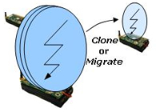
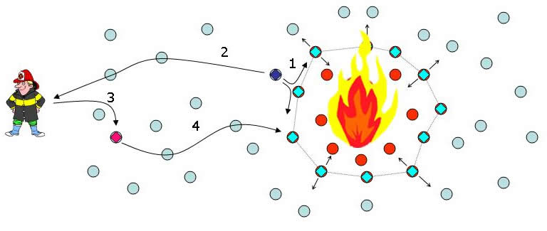
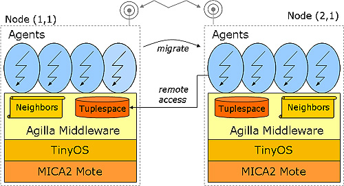
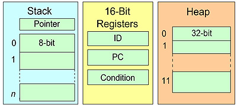
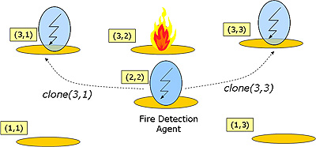

AgillaA Mobile Agent Middleware for Wireless Sensor Networks Download | Documentation | Examples | Publications | Related Work |
 |
Agilla is a middleware for wireless sensor networks (WSNs) that provides a mobile-agent style of programming. Agilla applications consist of mobile agents that can proactively migrate their code and state across the network. Mobile agents offer more flexibility by allowing applications to control the way they spread. They can position themselves in the optimal locations for performing application-specific tasks. They can save energy by bringing computation to the data rather than requiring that the data be sent over unreliable wireless links to the location containing the computation. They can increase the utility of a WSN by constraining themselves to the specific locales that are relevant to their application's requirements (in contrast to spreading throughout an entire network), and sharing the resources of a single node, i.e., multiple mobile agents can reside on each WSN node. Other systems like Deluge and Maté allow in-network reprogramming. Agilla, however, allows programs to control where they go and to maintain both their code and state across migrations.
Since new agents can be injected into a pre-existing network, the network can be re-tasked. Since each agent executes autonomously and multiple agents can simultaneously run on a node, multiple applications can co-exist. Since mobile agents can move and clone, they can quickly morph an application's installation base to handle unexpected changes in an environment. There are many other inherent advantages of using mobile agents, especially in a wireless sensor network.
However, there are also many challenges, the foremost being the lack of resources and an unreliable network. Agilla is the first mobile agent middleware for WSNs that is implemented entirely in TinyOS. It has been tested on Mica2, MicaZ, and Tmote Sky motes. It hides complexities associated with developing WSN applications, and provides mechanisms that overcome the challenges associated with limited resources and unreliable network communication. It demonstrates the feasibility of using mobile agents within WSNs and, furthermore, takes the first steps towards identifying a minimal set of primitives that should be provided for facilitating highly flexible WSN applications.
There are many applications of mobile agents in WSNs. Three include intruder detection, wildfire tracking, and cargo tracking. In intruder detection, detection agents are deployed around the perimeter of a WSN. When an intruder breaches a perimeter, the agents near the breach follow the intruder and clone themselves to form a perimeter around the intruder. Note that only the nodes next to the intruder are involved with tracking process. All other nodes are free to service other applications. In wildfire tracking, as shown in Figure 1, mobile agents swarm around a fire forming a perimeter, and dynamically adjusts it based on the movements of the fire. The algorithm for adjusting the perimeter is distributed, ensuring scalability. In cargo tracking, a multi-hop WSN is deployed on cargo containers. Each container has a mote that contains an electronic manifest. These motes differ from RFID tags in that they can perform computation, such as monitoring sensors for intrusions or contract violations. When a ship docks, agents are deployed onto the ship's WSN. These agents scour the cargo containers identifying those that contain specific items or require inspection. Mobile agents are necessary in this case since the port authorities do not trust the code of foreign origin. In addition, changing security levels and policies require a flexible software infrastructure that mobile agents provide.
|  |
| Figure 1: Wild fire tracking. (1) A fire detection agent detects fire and clones itself. The clone transforms itself into a fire tracking agent that repeatedly clones itself until a perimeter has been formed. Once formed, the agents continuously adjust the perimeter by migrating and cloning themselves. (2) A notification is sent to a fire fighter notifying him of the fire's location. (3) The fire fighter injects a guidance agent into the network that leads the fire fighter along a safe route to the fire. |
Most WSNs are inflexible application-specific systems; they are closed-systems that provide a limited set of services for a specific pre-determined set of users. As WSNs mature and motes become more sophisticated, large-scale WSNs consisting of thousands of nodes that span vast geographic areas will be deployed for longer periods of time. The large scale of these networks will inevitably lead to them being shared by multiple users, possibly simultaneously. These users are transient; they may come and go, sporadically using the network whenever and wherever they need to. The long deployment intervals ensure that the application requirements will change mid-deployment. The existing software infrastructure for WSNs does not provide the flexibility necessary for supporting these large-scale WSNs.
Presently, most WSNs are programmed prior to deployment and, once deployed, can only be tweaked through a static set of pre-defined parameters, severely limiting the WSNs flexibility. The network is limited to run a single application, which, as WSNs are deployed for longer intervals, becomes increasingly unacceptable. Also, the application itself may not be able to adapt to unpredictable changes in user requirements; it's simply not possible for software developers to foresee all possible uses of a WSN prior deployment. This is especially so as WSNs become larger, more sophisticated, deployed for longer periods of time, and over larger areas.
TinyOS includes Deluge, a system that enables in-network reprogramming. Deluge allows a user to install a new ROM image on a node wirelessly. It allows targeted deployment in which a new image is installed on a specific node in a WSN, or flooding, which which every node in the WSN is re-programmed with the new image. Since the entire program image is transferred, reprogramming a network is a slow and energy-consuming process. It cannot be done frequently due to lack of power and wireless bandwidth. Also, since the images are flooded, the network can only run one application at a time. One benefit of using Deluge, however, is that it reprograms a network using native code. This means the new application can be optimized for the specific platform and, thus, run more efficiently.
Another approach to increasing WSN flexibility is through a virtual machine that facilitates the distribution of interpreted code. One example of such a system for TinyOS-based networks is Maté. Maté programs are implemented as a set of capsules of various types. Each type of capsule performs a specific function, e.g., run-once, run-periodically, send-message, receive message, or function calls. The virtual machine supports a static set of capsules, which limits the number of capsules of a particular type that a developer can use. The capsule contains a sequence of instructions and a version number. Whenever a new capsule is injected, Maté epidemically spreads it throughout the WSN. Like Deluge, Maté only supports one application at a time. It does not allow fine-grain control over where new capsules are propagated, nor does it allow the capsules to carry state, e.g., a stack or program counter, as it is spread throughout a network.
The Agilla middleware architecture is shown in Figure 2. Agilla runs on top of TinyOS and allows multiple agents to execute on each node. The number of agents is variable and is determined primarily by the amount of memory available. Each agent is autonomous, but shares middleware resources with other agents in the system. Agilla provides two fundamental resources on each node: a neighbor list and a tuple space. The neighbor list contains the addresses of neighboring nodes. This is necessary for agents to decide where they want to move or clone to next. The tuple space provides an elegant decoupled-style of communication between agents. It is a shared memory architecture that is addressed by field-matching rather than memory addresses. A tuple is a sequence of typed data objects that is inserted into the tuple space. The tuple is remains in the tuple space even if the agent that inserted it dies or moves away. Later, another agent may retrieve the tuple by issuing a query for a tuple with the same sequence of fields. Note that tuple spaces decouples the sending agent from the receiving agent: they do not have to be co-located, or even aware of each other's existence, for them to communicate.
|  |
| Figure 2: The Agilla Middleware Architecture |
There are several challenges with developing Agilla. First, sensor network nodes have limited computational resources. For example, the MICA2 motes we use have a mere 128KB of instruction and 4KB of data memory. They also have a relatively slow 8MHz Atmel 128 microprocessor. Second, the wireless connectivity between motes is highly unreliable and provides very little bandwidth (38.4 Kbaud). Mobile agents are particularly susceptible to message loss because it interferes with the agent's ability to migrate and clone. Third, the Agilla primitives must be carefully tailored to address and/or take advantage of the salient properties of sensor network applications. For example, one property of sensor networks is that they place a greater emphasis on spatial properties. This is because taking sensor measurements without knowing from where the measurements are comming from is meaningless. In designing Agilla, we must recognize these properties and tailor Agilla's primitives accordingly.
|  |
| Figure 3: The Agilla agent architecture |
Agilla provides a stack-based architecture for each agent, as shown in in Figure 3. This reduces overhead by allowing most instructions to be one byte. To allow inter-agent communication, Agilla maintains a tuple space on each node that is shared by all agents residing on the node, and is accessible remotely. By interacting through a tuple space, each agent remains autonomous, decoupled both spatially and temporally. To minimize the impact of message loss, agents are divided into tiny packets (< 41 bytes), are migrated a single hop at a time, and utilize timeouts and retransmits. Since this hop-by-hop process introduces a significant amount of store-and-forward delay, it is only used while migrating or cloning agents, not for remote tuple space operations. Remote tuple space operations are non-blocking, preventing an agent from deadlocking due to message loss. In recognition of the importance of spatial data within sensor networks, Agilla addresses nodes by their location. All remote operations take a location as a parameter. For example, instead of cloning to a node with id=1, an agent would clone to a node at location (1,1). By tailoring Agilla's primitives to sensor networks, Agilla provides a foundation for rapidly developing applications for WSNs with unprecedented levels of flexibility.
|  |
| Figure 4: Location-Based addressing allows agents to intelligently navigate the sensor network. |
This work is primarily being conducted by Chien-Liang Fok a doctoral student in the Department of Computer Science at Washington University in St. Louis. His advisors are Gruia-Catalin Roman and Chenyang Lu.
The term "Agilla" is a play on words. Agilla's implementation is based on Bombilla, the TinyOS implementation of Maté. Agilla is, thus, a combination of the terms "Agile" and "Bombilla."
This page was last updated on April 7, 2008 5:14 PM by Chien-Liang Fok.